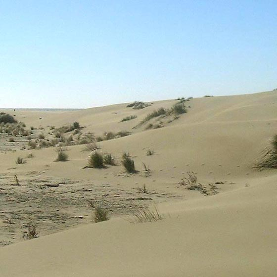

Bienvenue
Le premier site à proposer de véritables photos prises près du phare de Faraman, au cœur de la Camargue. Depuis vingt-cinq ans, ce carnet consigne les observations, les indices et les témoignages recueillis sur le terrain.

Observation
confirmée
confirmée
Fiche d'identification
- Nom usuel
- Dahu de Camargue
- Habitat
- Marais, salins, roselières
- Statut
- Rare, farouche, nocturne
- Secteur
- Faraman — Beauduc — Piémanson
Ce site est aussi une invitation à découvrir autrement la Camargue : Beauduc, Faraman, Piémanson, Salins-de-Giraud, la Gacholle, Vaccarès…